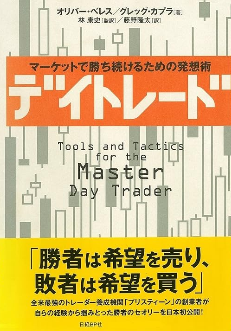
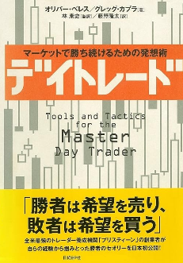

DayTraderの目次 
DayTraderの目次 
まえがき 2 / 2
序章 0 / 5
第１章_ トレーディングの勝者への誘い 👉 熟練したトレーダーの世界を理解する 13 / 14
第２章_ 優れたトレーダーへの精神修行 👉 トレーディング行動を修正する鍵 6 / 28
第３章_ 「逆境」と「損失」 👉 トレーディングで成功するための必要条件 13 / 13
第４章_ 真の勝者を目指すトレーニング 👉 失ったマネーと時間を取り戻すために 4 / 4
第５章_ トレーディングにおける7つの大罪 👉 いかに戦い、打ち勝つか 16 / 16
第６章_ 熟練トレーダーへの道 👉 成功をつかむための 12 の法則 12 / 12
第７章_ 究極のトレーダーの秘密 👉 すべてのトレーダーが知るべき 15 の掟（おきて） 15 / 15
第８章_ １０の教訓 👉 究極のトレーダーになるために 10 / 10
第９章_ 究極のトレーダーからの最後の言葉 1 / 1
まえがき
ここに「まえがき」の内容が入ります。
この革命がもたらすものは何か
ここに「この革命がもたらすものは何か」の内容が入ります。
「正しいトレーディング」とは何か
ここに「正しいトレーディング」の内容が入ります。